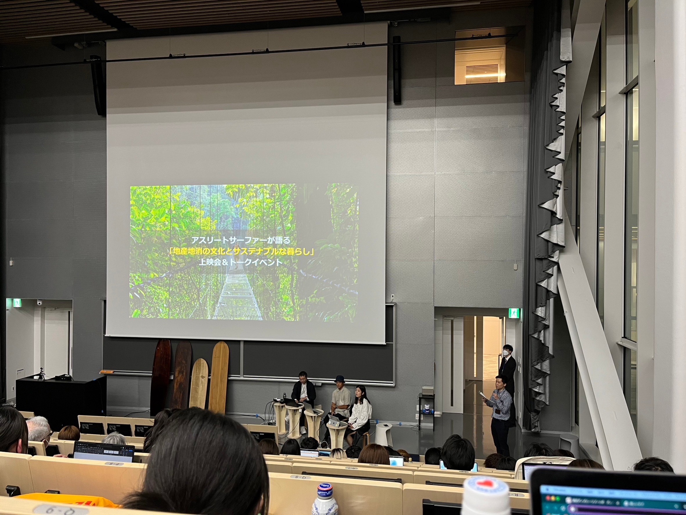
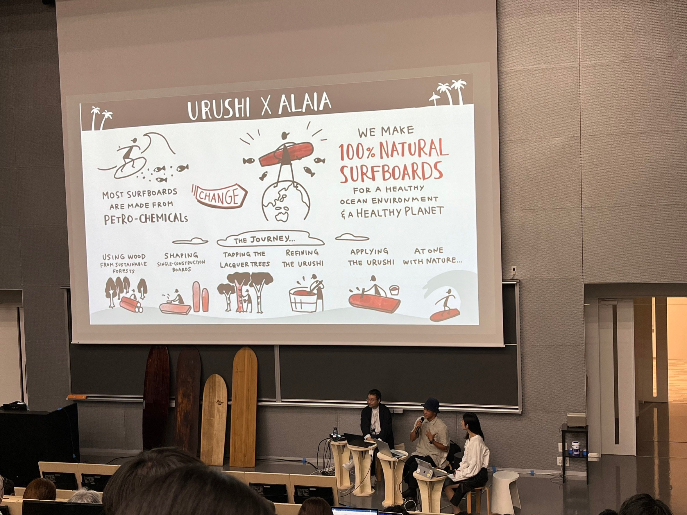

アライアと漆・海と山のリンク
アライアと漆のリンク>


今回の会はアスリートサーファーの石川拳太さんが地産地消をテーマに映画を見たり、トークを展開した。
映画では石川拳太さんはアライアというサーフィン板に似た板を日本の木材や漆を使って制作したドキュメンタリーを見た。
木を選ぶところから始まり、木材を作り、漆を塗るという工程でそれぞれ別の人と協力して制作にとる組んでいた。
この映画の中で森と海は繋がっていると発言されており、このアライア制作を見てそのつながりを実感することができた。
また1から作ったこともあり、アライアにとても愛着が湧いているとおっしゃっていた。
自分も1から何かを作り、愛着の湧くような物をファブラボで作ってみたいと思った。